嵌入式内部可编程模块
围绕 S3C2440 的 “存储 - IO - 中断 - 定时 - 通信 - 模数转换” 六大核心模块，都是嵌入式硬件操作的基础，且模块间相互依赖（如 GPIO 需配合中断实现按键响应，DMA 需配合 UART 提升传输效率）
嵌入式开发的核心是 “寄存器配置 + 时序控制”，所有模块操作最终都落实到 “地址映射→寄存器位操作→硬件响应” 的流程；即“功能→寄存器→代码” 的对应关系。
S3C2440
S3C2440 是三星推出的经典 ARM9 架构微处理器
- 基于 ARM920T 内核（RISC 精简指令集），支持 16/32 位指令执行
- 采用 AMBA 2.0 总线（AHB 高性能总线 + APB 外设总线 + ASB系统总线）
- ARM920T实现了MMU，AMBA总线和哈佛结构高速缓冲体系结构
ARM920内核
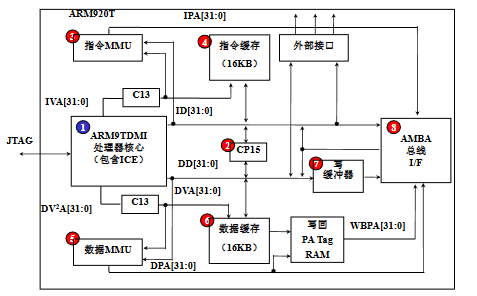
S3C2440 体系结构：
- 存储控制：支持 NOR/NAND Flash 启动（内置 4KB 启动缓冲区），8 个存储 Bank（共 1GB 地址空间），兼容 SRAM、SDRAM 等存储器件，支持大小端。
- 显示接口：LCD 控制器支持 STN（最高 4096 色）和 TFT（最高 16M 色）屏幕，适配常见的 320×240、640×480 等分辨率。
- 通信接口：3 路 UART（带 64B FIFO，支持 IrDA 红外通信）、2 路 SPI、1 路 IIC（多主机支持）、1 路 IIS（音频）、2 路 USB 主机 + 1 路 USB 设备（1.1 版）、SD/MMC 卡接口。
- 数据采集与控制：8 通道 10 位 ADC（模数转换，最高 500Kbps）+ 触摸屏接口、4 路 PWM 定时器、看门狗定时器、RTC 实时时钟（带日历 / 闹钟）。
- 扩展能力：130 个通用 I/O 口（支持复用）、24 路外部中断、4 通道 DMA（解放 CPU，提升数据传输效率）、摄像头接口（最高 4096×4096 像素输入）。共60个中断源
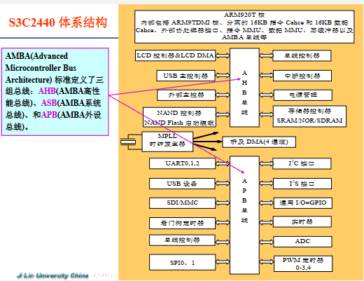
存储器控制器
S3C2440 把 “存储控制模块” 集成在芯片内部，相当于给外部所有存储器配了一个 “专属管家”
- 在访问存储单元时，可能采取平板式的地址映射机制对其进行读写，或需要使用虚拟地址对其进行读写。
- ARM处理器中引入了存储管理单元（MMU）来管理存储系统。
| 关键参数 | 含义（通俗解读） | 核心作用 |
|---|---|---|
| 外部存储空间总容量：1GB | S3C2440 能管理的外部存储最大范围，拆成 8 个 “子仓库” | 划定 CPU 可访问的外部存储边界 |
| 8 个 Bank（存储块），每块 128MB | 把 1GB 空间分成 8 个独立区域，用 nGCS7~0 引脚 “点名” 访问（比如 nGCS0 有效 = 访问 Bank0）同时地址地址为0x0000_0000 | 给不同类型存储器 “分配专属地址段”，避免冲突 |
| 大小端模式（软件可选） | 小端：低字节存在低地址（如 0x1234，0x12 在高地址、0x34 在低地址）；大端相反 | 适配不同硬件 / 软件的字节存储习惯（嵌入式常用小端） |
| 数据位宽 | Bank0：16/32 位（适配启动类器件，如 NOR Flash）；其他 Bank：8/16/32 位 | 匹配不同存储器的 “数据传输宽度”（比如 8 位串口 Flash 用 8 位宽，32 位 SDRAM 用 32 位宽） |
| Bank0-5：接 ROM/SRAM；Bank6-7：接 ROM/SRAM/SDRAM | 不同 Bank 的 “适配器件类型” | SDRAM 需要复杂时序控制，仅 Bank6/7 支持，Bank0-5 适配简单器件（如启动用的 NOR Flash） |
| Bank0-6 起始地址固定，Bank7 可调；Bank6-7 寻址范围可调 | 地址灵活性设计 | Bank7 可适配不同容量的 SDRAM，比如接 128MB 或 256MB SDRAM 时，调整起始地址避免浪费 |
分清 “嵌入式场景下各类存储器的用途差异”
| 存储类型 | 核心特性 | 嵌入式典型用途 | 关键注意点 |
|---|---|---|---|
| ROM/EEPROM/Flash | 只读（EEPROM 可电擦写）、掉电数据不丢 | 存固定程序 / 参数（如早期 bootloader） | 速度慢，仅读 / 少量写 |
| SRAM | 静态、读写快、掉电丢数据 | 嵌入式系统 “高速缓存区”（如 CPU 附近的临时数据） | 成本高，容量小 |
| SDRAM | 同步动态、读写较快、掉电丢数据 | 运行时的内存（如 Linux 系统的内存空间） | 需时钟同步，仅 Bank6/7 支持 |
| NOR Flash | 按 “字” 操作、支持 XIP（片上运行）、可靠 | 启动分区（存 bootloader）、小容量程序存储 | 成本高，容量小，可直接启动 |
| NAND Flash | 按 “块” 操作、容量大、速度快、有坏区 | 存系统镜像、大数据（如 Android 的 userdata 分区） | 不支持 XIP，需 ECC 校验（纠错），启动时要靠 Steppingstone |
| SIMM/DIMM/RIMM/SO-DIMM | 内存模组（内存条）的物理形态 | 区分台式机（DIMM）、笔记本（SO-DIMM）等硬件适配 | 仅硬件选型时关注，编程层面不用管 |
S3C2440 复位后存储器映射：
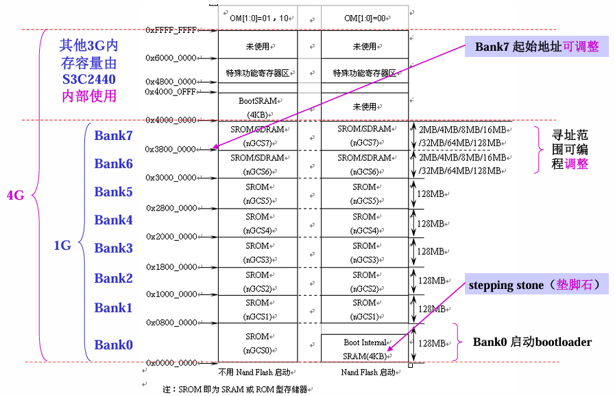
引脚 OM[1:0] 设置
OM [1] 和 OM [0] 是 S3C2440 的硬件引脚（需在硬件设计时接高 / 低电平），直接决定复位后 Bank0 的工作模式
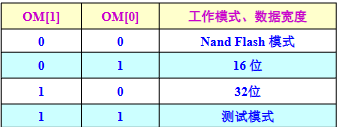
[!tip]
Steppingstone 的作用（NAND 启动的核心）
NAND Flash 的物理特性是 “不能片上运行代码（XIP）”，但成本低、容量大，因此 S3C2440 设计了 4KB 的 Steppingstone（内置 SRAM）：
- 当 OM [1:0]=00（NAND 模式）时，复位后硬件自动完成：
- 从 NAND Flash 的起始地址读取前 4KB 的 bootloader 代码；
- 把代码拷贝到 Steppingstone（地址映射为 0x00000000~0x00000FFF）；
- CPU 跳转到 0x00000000，执行 Steppingstone 中的代码；
- 这段 4KB 代码的核心任务：初始化 SDRAM，然后把 NAND Flash 中剩余的 bootloader / 内核镜像拷贝到 SDRAM，完成 “接力启动”。
存储器控制器特殊功能寄存器（SFR）
13 个寄存器按功能可分为 5 组，核心对应外部存储的 “总线宽度→时序→刷新→容量→模式”，复位值决定了上电后的默认状态，实操需按需修改：
| 分组 | 寄存器 | 地址 | 核心功能 | 关键特点 |
|---|---|---|---|---|
| 总线宽度控制 | BWSCON | 0x48000000 | 8 个 Bank 的总线宽度 + WAIT 使能 | 每个 Bank 独立配置，是硬件适配的基础 |
| 存储块时序控制 | BANKCON0~BANKCON7 | 0x48000004 起 | 对应 Bank 的访问时序（如地址建立时间） | BANK0~5 适配 ROM/SRAM，BANK6~7 支持 SDRAM |
| SDRAM 刷新控制 | REFRESH | 0x48000024 | SDRAM 刷新模式 / 周期 / 计数值 | 仅 SDRAM 需配置，否则会丢失数据 |
| 容量与省电控制 | BANKSIZE | 0x48000028 | BANK6/7 容量 + 突发操作 + 省电模式 | 决定 SDRAM 的总容量，影响地址映射范围 |
| SDRAM 模式控制 | MRSRB6~MRSRB7 | 0x4800002C 起 | SDRAM 写突发长度 / 测试模式 | 复位值不确定，必须手动配置才能使用 SDRAM |
总线宽度控制寄存器 BWSCON（0x48000000）
告诉 CPU“每个 Bank 的存储器是 8/16/32 位宽”，以及是否启用 WAIT 等待信号（适配低速存储器）。
- 寄存器结构：每个 Bank 占 4 位（STn+WSn+DWn），共 32 位覆盖 Bank7~0（Reserved [0] 保留为 0）。
- 关键位含义（以 Bank7 为例，其他 Bank 同理）：
- ST7（bit31）：是否使用 UB/LB（高 / 低字节控制），0 = 用 nWBE 引脚，1 = 用 nBE 引脚（SRAM 常用）；
- WS7（bit30）：WAIT 信号使能，0 = 不启用，1 = 启用（低速存储器需启用，避免数据出错）；
- DW7（bit29~28）：总线宽度，00=8bit、01=16bit、10=32bit（必须与硬件接线一致）。
- 实操示例：Bank0 接 16 位 NOR Flash，配置为 “16bit 宽度 + 不启用 WAIT”→ BWSCON 的 DW0=01（bit5~4）、WS0=0（bit6）。
存储块控制寄存器 BANKCONn（0x48000004 起）
配置每个 Bank 的访问时序（如地址建立时间、访问周期），时序不匹配会导致读写出错。
SDRAM 刷新控制寄存器 REFRESH（0x48000024）
SDRAM 是动态存储器，需定期刷新才能保留数据，此寄存器配置刷新规则（ROM/SRAM 无需配置）。比如设置刷新模式､刷新周期､刷新计数值｡
存储块大小控制寄存器 BANKSIZE（0x48000028）
配置 BANK6/7 的 SDRAM 容量，以及 CPU 突发操作、SDRAM 省电模式。
SDRAM 模式寄存器 MRSRB6~MRSRB7（0x4800002C/30）
配置 SDRAM 的工作模式（如写突发长度），复位值不确定，必须手动配置。
NAND Flash 控制器
S3C2440 的 NAND Flash 控制器是 “低成本大容量存储方案” 的核心，核心解决 “NAND Flash 不能直接运行代码（无 XIP）” 的问题，通过内置缓冲 + 专用时序 / 寄存器，实现启动加载、数据读写和错误校验
NOR vs NAND 核心差异（决定控制器设计）
| 关键差异点 | NOR Flash | NAND Flash | 控制器要解决的问题 |
|---|---|---|---|
| 核心能力 | 支持 XIP（片上运行代码） | 不支持 XIP（仅顺序访问） | 需通过 Steppingstone 缓冲启动代码 |
| 容量与价格 | 小（1MB~32MB）、价高 | 大（16MB~512MB）、价低 | 适配大容量存储的地址 / 命令时序 |
| 可靠性 | 位反转少 | 位反转常见 | 内置 ECC 硬件校验纠错 |
| 接口与速度 | 同 RAM 接口、擦写慢 | I/O 复用接口、擦写快 | 提供专用命令 / 地址 / 数据时序 |
- 实现 NAND Flash 启动：通过 Steppingstone 缓冲（4KB 内置 SRAM 缓冲器），让系统能从低成本 NAND Flash 启动；
- NAND Flash有2种工作模式：自动启动模式、 NAND Flash模式。
- 自动启动模式：重启时自动将NAND Flash上的启动代码加载到 4KB的Steppingstone上，然后代码在Steppingstone上执行。
- NAND Flash模式（软件模式）：作为一般性存储器，可读可写
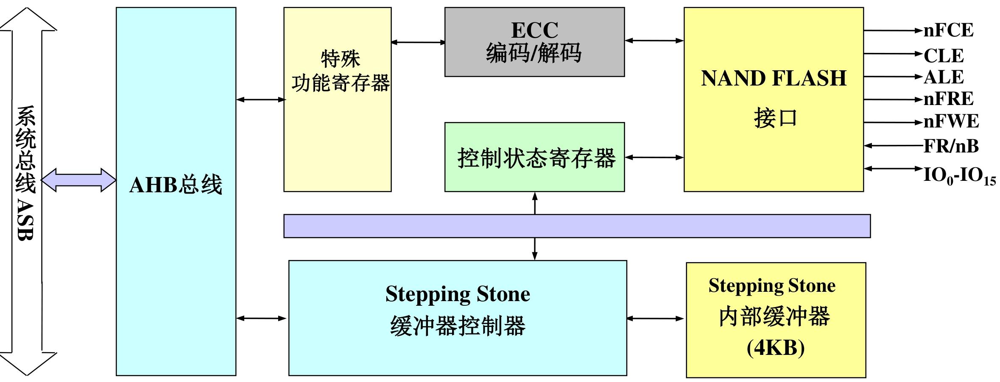
- 启动前硬件引脚配置（OM+GPG 引脚）
| 引脚组合 | 配置功能 |
|---|---|
| OM[1:0] = 00 | 使能 NAND Flash 启动模式（必设） |
| NCON | 选择 NAND 类型：0 = 普通（256/512 字节页），1 = 高级（1K/2K 字节页） |
| GPG13 | 页容量选择：配合 NCON，0=256/1K 字节，1=512/2K 字节 |
| GPG14 | 地址周期选择：配合 NCON，0=3/4 个周期，1=4/5 个周期 |
| GPG15 | 总线宽度选择：0=8 位，1=16 位（需与 NAND 芯片匹配） |
时序配置（NFCONF 寄存器）
核心时序参数（控制信号同步，避免读写错误）：
- TACLS：CLE/ALE 信号持续时间 = HCLK × TACLS（0~3 可选）；
- TWRPH0：nWE/nRE 信号持续时间 = HCLK × (TWRPH0+1)（0~7 可选）；
- TWRPH1：数据有效时间 = HCLK × (TWRPH1+1)（0~7 可选）；
- 示例：HCLK=100MHz（周期 10ns），设 TACLS=1（10ns）、TWRPH0=0（10ns）、TWRPH1=0（10ns），适配大多数 NAND 芯片。
GPIO
GPIO: General Purpose I/O ports,通用输入/输出，即ARM芯片中称为输 入输出端口｡
GPIO 就是芯片上的 “通用电引脚”—— 你可以通过代码控制这些引脚输出高电平（比如 3.3V）或低电平（0V），也能读取外部设备加到引脚上的电平（比如按键按下是低电平、松开是高电平）。
S3C2440的GPIO：130个，分为9组，GPA ~ GPJ，这9组GPIO端口均为多功能端口，端口功能可以编程设置
“先配置，后使用” 是铁律
所有 GPIO 引脚默认可能不是 “普通输入 / 输出” 功能（比如 GPA 组默认是地址总线），必须在程序一开始（主程序运行前）配置对应的 “控制寄存器”（比如 GPFCON、GPGCON），选定你需要的功能（比如普通 IO、中断、UART 等），否则引脚不会按预期工作。
“不用特殊功能，就当普通 IO”：
如果一个引脚你不用来做 UART、中断、LCD 等特殊功能，就可以把它设为 “普通输入 / 输出”，和 51 单片机的 IO 口完全一样用。
分组的意义
9 组 GPIO（GPA~GPJ）不是随便分的，每组有 “主打功能”：
- GPA：地址总线 / 片选信号（主要输出并且只能作为输出口，几乎不用作普通 IO）；
- GPF/GPG：支持外部中断（常用作按键中断、传感器中断）；
- GPC/GPD：LCD 接口（接显示屏的行 / 列驱动）；
- GPH：UART/USB 等通信接口；
- GPJ：摄像头接口；
分组的目的是让硬件接线更规整，比如接 LCD 就优先用 GPC/GPD，接按键中断就优先用 GPF/GPG。
GPIO（GPA~GPJ）的完整功能
- 功能 1（兜底）：所有引脚默认支持「普通输入 / 输出」（和 51 单片机 IO 口一样，控电平、读信号）；
- 功能 2/3（专用）：为特定外设设计的 “专属接口”（如 LCD、UART、中断），是嵌入式开发的核心配置；
- 排他性：一个引脚同一时间只能选一种功能（比如 GPD8 要么当普通 IO，要么当 LCD 的 VD16，要么当 SPI 的 SPIMISO1）。
通过每组端口的「控制寄存器」（如 GPACON、GPBCON）配置 “功能选择位”（每引脚占 2~4 位），锁定所需功能。
端口A~J的引脚功能
端口 A（GPA）：系统底层控制专用（23 引脚）
普通输出口（仅能输出高低电平）
① NAND Flash 控制：GPA17=CLE（命令锁存）、GPA18=ALE（地址锁存）、GPA19=nFWE（写允许）、GPA20=nFRE（读允许）、GPA22=nFCE（片选）；
② 地址总线：GPA0~11=ADDR0、ADDR16~26（外部存储地址）；12位
③ Bank 片选：GPA12~16=nGCS1~5（外部存储 Bank1~5 选择）
端口 B（GPB）：DMA / 定时器专属（11 引脚）
普通输入 / 输出（无限制）
① DMA 请求 / 响应：GPB5~10=nXBACK/nXBREQ/nXDACK0/1/nXDREQ0/1（DMA 传输的触发 / 应答信号）；
② 定时器输出：GPB0~3=TOUT0~3（PWM 波形输出）、GPB4=TCLK0（定时器时钟）
端口 C（GPC）：LCD 控制 + 低 8 位数据（16 引脚）
普通输入 / 输出
① LCD 控制信号：GPC0=LEND、GPC1=VCLK（像素时钟）、GPC2=VLINE（行同步）、GPC3=VFRAME（场同步）等；
② LCD 数据：GPC8~15=VD0~VD7（LCD 低 8 位像素数据）
端口 D（GPD）：LCD 高 16 位数据 + SPI 复用（16 引脚）
- 普通输入 / 输出
- LCD 高 16 位数据：GPD0~15=VD8~23（和 GPC 的 VD0~7 组成 24 位 LCD 数据）
- PI1 接口：GPD8=SPIMISO1、GPD9=SPIMOSI1、GPD10=SPICLK1；SPI 片选：GPD14=nSS1、GPD15=nSS0
端口 E（GPE）：通信外设 “一站式”（16 引脚）
普通输入 / 输出
① SPI0：GPE11=SPIMISO0、GPE12=SPIMOSI0、GPE13=SPICLK0；
② SD 卡：GPE5=SDCLK、GPE6=SDCMD、GPE7~10=SDDAT0~3；
③ IIC：GPE14=IICSCL、GPE15=IICSDA；
④ IIS 音频：GPE0=I2SLRCK、GPE1=I2SSCLK、GPE2=CDCLK、GPE3=I2SSDI、GPE4=I2SSDO
AC97 音频：GPE0=AC_SYNC、GPE1=AC_BIT_CLK、GPE2=AC_nRESET、GPE3=AC_SDATA_IN、GPE4=AC_SDATA_OUT
端口 F（GPF）：核心外部中断（8 引脚）
- 普通输入 / 输出
- 外部中断 EINT0~7：GPF0=EINT0、GPF1=EINT1…GPF7=EINT7
端口 G（GPG）：扩展外部中断 + UART/SPI（16 引脚）
- 普通输入 / 输出
- 外部中断 EINT8~23：GPG0=EINT8、GPG1=EINT9…GPG15=EINT23（GPG4 额外支持 LCD_PWREN，LCD 电源控制）
- UART1 流控：GPG9=nRTS1、GPG10=nCTS1、GPG11=TCLK1；SPI1：GPG5=SPIMISO1、GPG6=SPIMOSI1、GPG7=SPICLK1
端口 H（GPH）：UART 通信 + 时钟输出（11 引脚）
普通输入 / 输出
① UART 通信：GPH2=TXD0、GPH3=RXD0（UART0，调试首选）；GPH4=TXD1、GPH5=RXD1（UART1）；GPH6=TXD2、GPH7=RXD2（UART2）；
② 时钟输出：GPH8=UEXTCLK、GPH9=CLKOUT0、GPH10=CLKOUT1
UART 流控：GPH0=nCTS0、GPH1=nRTS0（UART0）；GPH6=nRTS1、GPH7=nCTS1（UART2）
端口 J（GPJ）：摄像头接口专用（13 引脚）
普通输入 / 输出
摄像头全套接口：
① 数据：GPJ0~7=CAMDATA0~7；
② 控制：GPJ8=CAMPCLK（像素时钟）、GPJ9=CAMVSYNC（场同步）、GPJ10=CAMHREF（行同步）、GPJ11=CAMCLKOUT（摄像头时钟）、GPJ12=CAMRESET（摄像头复位)
[!note]
- 系统底层（启动 / NAND）→ 找 GPA；
- LCD 显示 → 找 GPC+GPD；
- UART 调试 → 找 GPH（优先 GPH2/3=UART0）；
- 中断 → 核心中断找 GPF，扩展中断找 GPG；
- 通信外设（SD/IIC/SPI）→ 找 GPE；
- 摄像头 → 找 GPJ；
- DMA / 定时器 → 找 GPB；
- 普通 IO（LED / 按键）→ 优先用未被专用功能占用的 GPB/GPE/GPG 引脚。
端口配置寄存器
- 通过编程设置端口控制寄存器，以决定使用每个I/O引脚的哪种功能
- I/O端口的状态（如输入/输出、数据线是否挂起），用户也需要通过编程设置控制寄存器来确定
S3C2440有9个端口，每个端口一般对应3个寄存器（端口A只有2个）：
| 寄存器类型 | 核心作用 | 通用操作逻辑 |
|---|---|---|
| 控制寄存器（*CON） | 定义引脚功能（输入 / 输出 / 专用外设功能） | 可读可写，通过特定位配置，不同端口位宽（1 位 / 2 位）对应不同功能选择 |
| 数据寄存器（*DAT） | 存储引脚输入 / 输出电平数据 | 可读可写，1 位对应 1 个引脚，1 = 高电平，0 = 低电平 |
| 上拉电阻寄存器（*UP） | 控制引脚是否启用内部上拉电阻 | 可读可写，1 位对应 1 个引脚，1 = 禁用上拉，0 = 启用上拉（GPA 无此寄存器） |
- 端口 A（GPA）：无内部上拉，侧重系统控制
| 寄存器 | 地址 | 复位值 | 核心细节 |
|---|---|---|---|
| GPACON（控制） | 0x56000000 | 0x7FFFFF | 每引脚 1 位控制，仅 2 种功能（0 = 普通输出，1 = 专用功能：地址总线 / NAND 控制）；GPA 仅支持输出，无输入功能 |
| GPADAT（数据） | 0x56000004 | 不确定 | 位 [22:0] 存储端口数据，仅用于输出操作 |
- 端口 B（GPB）：支持 DMA / 定时器功能
| 寄存器 | 地址 | 复位值 | 核心细节 |
|---|---|---|---|
| GPBCON（控制） | 0x56000010 | 0x000000 | 每引脚 2 位控制，4 种选择（00 = 输入，01 = 输出，10=DMA / 定时器功能，11 = 保留） |
| GPBDAT（数据） | 0x56000014 | 不确定 | 位 [10:0] 存储 11 个引脚数据，输入时读、输出时写 |
| GPBUP（上拉） | 0x56000018 | 0x000 | 位 [10:0] 控制对应引脚上拉，默认启用上拉 |
- 端口 C（GPC）：LCD 接口专用
| 寄存器 | 地址 | 复位值 | 核心细节 |
|---|---|---|---|
| GPCCON（控制） | 0x56000020 | 0x000000 | 每引脚 2 位控制，4 种选择（00 = 输入，01 = 输出，10=LCD 控制信号 / VD0~VD7，11 = 保留） |
| GPCDAT（数据） | 0x56000024 | 不确定 | 位 [15:0] 存储 16 个引脚数据，适配 LCD 数据传输 |
| GPCUP（上拉） | 0x56000028 | 0x0000 | 位 [15:0] 控制上拉，默认启用 |
- 端口 D（GPD）：LCD 高 16 位数据 + SPI 复用
| 寄存器 | 地址 | 复位值 | 核心细节 |
|---|---|---|---|
| GPDCON（控制） | 0x56000030 | 0x000000 | 每引脚 2 位控制，4 种选择（00 = 输入，01 = 输出，10=VD8~VD23，11=SPI 片选 /nSS0，仅 GPD15 支持） |
| GPDDAT（数据） | 0x56000034 | 不确定 | 位 [15:0] 存储 16 个引脚数据，兼顾 LCD 和普通 IO 需求 |
| GPDUP（上拉） | 0x56000038 | 0x0000 | 位 [15:0] 控制上拉，默认启用 |
- 端口 E（GPE）：多通信外设集中区
| 寄存器 | 地址 | 复位值 | 核心细节 |
|---|---|---|---|
| GPECON（控制） | 0x56000040 | 0x000000 | 每引脚 2 位控制，4 种选择（00 = 输入，01 = 输出，10=SPI/SD 卡 / IIC/IIS，11=AC97 音频功能）；GPE14~15 为无上拉漏极开路 |
| GPEDAT（数据） | 0x56000044 | 不确定 | 位 [15:0] 存储 16 个引脚数据，适配多种通信外设数据传输 |
| GPEUP（上拉） | 0x56000048 | 0x0000 | 位 [15:0] 控制上拉，默认启用（GPE14~15 无内部上拉） |
- 端口 F（GPF）：核心外部中断源
| 寄存器 | 地址 | 复位值 | 核心细节 |
|---|---|---|---|
| GPFCON（控制） | 0x56000050 | 0x000000 | 每引脚 2 位控制，4 种选择（00 = 输入，01 = 输出，10=EINT0~EINT7 中断，11 = 保留） |
| GPFDAT（数据） | 0x56000054 | 不确定 | 位 [7:0] 存储 8 个引脚数据，中断场景中可读取触发电平 |
| GPFUP（上拉） | 0x56000058 | 0x00 | 位 [7:0] 控制上拉，中断引脚建议禁用上拉 |
- 端口 G（GPG）：扩展中断 + UART/SPI 复用
| 寄存器 | 地址 | 复位值 | 核心细节 |
|---|---|---|---|
| GPGCON（控制） | 0x56000060 | 0x00000000 | 每引脚 2 位控制，4 种选择（00 = 输入，01 = 输出，10=EINT8~EINT23 中断，11=UART1/SPI1 功能） |
| GPGDAT（数据） | 0x56000064 | 不确定 | 位 [15:0] 存储 16 个引脚数据，兼顾中断和通信功能 |
| GPGUP（上拉） | 0x56000068 | 0xF800 | 位 [15:0] 控制上拉，默认高 8 位禁用上拉（0xF800），低 8 位启用 |
- 端口 H（GPH）：UART 通信 + 时钟输出
| 寄存器 | 地址 | 复位值 | 核心细节 |
|---|---|---|---|
| GPHCON（控制） | 0x56000070 | 0x00000000 | 每引脚 2 位控制，4 种选择（00 = 输入，01 = 输出，10=UART0~UART2 / 时钟输出，11=UART 流控） |
| GPHDAT（数据） | 0x56000074 | 不确定 | 位 [10:0] 存储 11 个引脚数据，UART 调试核心端口 |
| GPHUP（上拉） | 0x56000078 | 0x000 | 位 [10:0] 控制上拉，默认启用 |
- 端口 J（GPJ）：摄像头接口专用
| 寄存器 | 地址 | 复位值 | 核心细节 |
|---|---|---|---|
| GPJCON（控制） | 0x560000D0 | 0x00000000 | 每引脚 2 位控制，4 种选择（00 = 输入，01 = 输出，10 = 摄像头数据 / 控制信号，11 = 保留） |
| GPJDAT（数据） | 0x560000D4 | 不确定 | 位 [12:0] 存储 13 个引脚数据，适配摄像头数据采集 |
| GPJUP（上拉） | 0x560000D8 | 0x000 | 位 [12:0] 控制上拉，默认启用 |
[!note]
- 地址规律：每组端口寄存器地址连续，间隔 4 字节（如 ***CON→***DAT→*UP 依次递增 4 字节）；同时GPA的起始地址为0x5600_0000，GPB为0x5600_0010，即每个端口的寄存器地址相差
0x10**- 复位值特点：控制寄存器复位值多为 0x000000（GPA 为 0x7FFFFF），数据寄存器复位值均不确定，上拉寄存器复位值多为 0x000（GPG 为 0xF800）；
- 配置顺序：必须先通过***CON 配置引脚功能，再用\*DAT 读写数据，最后按需配置 *UP 控制上拉，顺序错误会导致功能失效；
- 功能冲突规避：同一引脚同一时间仅能选择一种功能，需提前规划引脚用途，避免复用冲突。
GPIO 其他寄存器
多控制寄存器（MISCCR）：全局功能综合控制
统筹 USB 模式、时钟输出、电池保护、数据线拉电阻等全局功能，是跨外设的基础控制寄存器。
DCLK 控制寄存器（DCLKCON）：外部时钟精准调控
专门控制外部源时钟 DCLK0 和 DCLK1 的使能、分频、占空比，适配需要精准时钟的外设。
外部中断控制寄存器（EXTINT0~EXTINT2）：中断触发方式配置
共有3个，分别为EXTINT0、EXTINT1、EXTINT2。对24个外部中断请求信号（ EINT0 ~EINT23）的有效触发方式进 行选择。 EXTINT0地址=0x56000088 ，复位值=0x00000000，可读可写。 EXTINT1地址=0x5600008c ，复位值=0x00000000，可读可写。 EXTINT2地址=0x56000090 ，复位值=0x00000000，可读可写
每 3 位控制一个中断，支持 5 种模式（000 = 低电平、001 = 高电平、01×= 下降沿、10×= 上升沿、11×= 边沿触发）
滤波器使能：EXTINT1~EXTINT2 含 FLTENx 位（1 = 使能滤波器，0 = 不使能），配合 EINTFLTn 实现防抖
外部中断过滤寄存器（EINTFLT0~EINTFLT3）：中断防抖控制
过滤外部中断引脚的抖动信号，确保中断触发稳定（有效电平需保持≥40ns）。
外部中断屏蔽 / 未决寄存器（EINTMSK/EINTPND）：中断状态管理
控制外部中断的屏蔽与否，并记录中断请求状态，是中断响应的 “开关” 与 “状态指示器”。
- EINTMSK：位 [4:23] 对应 EINT4~EINT23，0 = 不屏蔽（允许中断），1 = 屏蔽；位 [0:3] 保留。
- EINTPND：位 [4:23] 对应 EINT4~EINT23，1 = 有中断请求（未处理），0 = 无请求；需手动写 1 清除未决状态。
通用状态寄存器（GSTATUS0~GSTATUS4）：系统状态监测
读取外部引脚状态、芯片标识、复位原因，保存关键数据，是系统诊断的重要依据。
- GSTATUS0（0x560000AC）：只读，反映 nWAIT/NCON/RnB/BATT_FLT 引脚实时状态；
- GSTATUS1（0x560000B0）：只读，芯片 ID 复位值 0x32440001（S3C2440 标识）；
- GSTATUS2（0x560000B4）：可读可写，记录复位原因（WDTRST = 看门狗复位、SLEEPRST = 节能复位、PWRST = 上电复位）；
- GSTATUS3~4（0x560000B8/BC）：可读可写，上电复位清空，否则保存数据（可被 nRESET 或看门狗清 0）。
驱动能力控制寄存器（DSC0~DSC1）：I/O 驱动强度调节
配置地址线、数据线、控制线的驱动电流，避免因驱动不足导致的信号不稳定。
内存休眠控制寄存器（MSLCON）：休眠模式引脚状态配置
定义系统休眠时，存储器接口相关引脚的状态（高阻、闲置、输出 0），保护外设与内存。
I/O应用实例
[!important]
GPIO 的配置与使用核心遵循 “功能定义→辅助配置→数据读写” 的固定流程，
首先在进行一下配置前需要明确配置的端口，从而确定端口各个寄存器的地址用于绑定
- 定义寄存器时添加
volatile关键字（如#define rGPFCON (*(volatile unsigned *)0x56000050)），禁止编译器优化，确保每次读写都是实际操作硬件寄存器。
1. 引脚功能配置（核心第一步）
- 控制寄存器（*CON），如 GPFCON（地址 0x56000050）。
- 明确引脚是 “输入 / 输出” 还是 “专用功能（如中断、通信接口）”，避免功能冲突。
- 采用 “先清后置” 的位操作逻辑：先通过 “&= 掩码” 清除目标引脚原有配置（不影响其他引脚），再通过 “|= 配置值” 设定目标功能。
2. 辅助配置（上拉 / 下拉电阻）
- 操作对象：上拉电阻寄存器（*UP），如 GPFUP（地址 0x56000058）。
- 核心目的：避免输入引脚电平漂浮，或增强输出引脚驱动稳定性（上拉电阻使引脚默认高电平，下拉电阻默认低电平，S3C2440 仅内置上拉）。
- 实操要点
- 位操作精准控制：1 = 禁用上拉，0 = 启用上拉，无需改动的引脚通过掩码保留原有状态。
- 示例（GPF6~GPF3 启用上拉）：
rGPFUP &= 0x87;（0x87=10000111，仅将 GPF6~GPF3 位清 0 启用上拉，其他位不变）。
- 输出引脚建议启用上拉（增强驱动），中断引脚按需禁用上拉（避免干扰触发信号）。
3. 数据读写（功能实现核心）
- 数据寄存器（*DAT），如 GPFDAT（地址 0x56000054）。
- 输出模式时写入电平（控制外设），输入模式时读取电平（获取外设状态）。
- 输出操作：直接写入对应值，1 = 高电平，0 = 低电平（如 LED 亮 = 引脚低电平，
rGPFDAT=0xF7对应 GPF3 低电平，LED1 亮）。 - 输入操作：直接读取寄存器值，通过位掩码提取目标引脚状态（如
Var = rGPFDAT & 0x08;读取 GPF3 电平）。
- 输出操作：直接写入对应值，1 = 高电平，0 = 低电平（如 LED 亮 = 引脚低电平，
- 数据规律：多个引脚控制时，可定义数组存储对应电平组合（如 LED 流水灯数组
ledtab[]={0xf7,0xef,0xdf,0xbf}，依次对应 4 个 LED 单独点亮的电平配置）。
// 1. 定义GPIO寄存器地址（根据芯片手册修改）
#define rGPIO_CON (*(volatile unsigned *)0xXXXXXXX) // 控制寄存器地址
#define rGPIO_DAT (*(volatile unsigned *)0xXXXXXXX) // 数据寄存器地址
#define rGPIO_UP (*(volatile unsigned *)0xXXXXXXX) // 上拉寄存器地址
// 2. 延时函数（按需调整时长）
void Delay(unsigned int x) {
unsigned int i,j,k;
for(i=0;i<=x;i++) for(j=0;j<=0xff;j++) for(k=0;k<=0xff;k++);
}
// 3. GPIO初始化（功能+上拉配置）
void GPIO_Init() {
// 步骤1：配置目标引脚为输出/输入
rGPIO_CON &= 0xXXXX; // 清除原有配置（掩码根据引脚位置计算）
rGPIO_CON |= 0xXXXX; // 设定目标功能（01=输出，00=输入）
// 步骤2：配置上拉电阻
rGPIO_UP &= 0xXXXX; // 启用/禁用目标引脚上拉（0=启用，1=禁用）
}
// 4. 外设控制（数据读写）
void GPIO_Control() {
while(1) {
rGPIO_DAT = 0xXX; // 写入电平（控制外设状态，如LED亮）
Delay(100); // 维持状态
rGPIO_DAT = 0xXX; // 切换电平（如LED灭）
Delay(100);
}
}
中断系统
S3C2440 的中断系统是芯片响应 “异步事件”（如外设请求、外部信号触发）的核心机制，本质是让 CPU 暂停当前任务，优先处理紧急事件，处理完后再回到原任务。
S3C2440 内置中断控制器，专门管理 60 个中断源，核心作用是统一协调所有中断请求
- 区分并响应两种中断请求：FIQ（快速中断请求）和IRQ（普通中断请求）
- IRQ可以被FIQ中断，但IRQ不能中断FIQ
CPU 的程序状态寄存器（CPSR） 中专门有两位控制中断响应，相当于中断的 “全局开关”：
- F 位（FIQ 屏蔽位）；I 位（IRQ 屏蔽位）：1屏蔽，0允许
注：系统启动时默认 I=1、F=1（屏蔽所有中断），需在程序中手动置 0 开启对应中断。
中断源
3C2440 有 60 个中断源（触发中断的事件 / 设备），但单个 32 位寄存器只能记录 32 个状态（1 位对应 1 个中断源），因此需要多个寄存器（如 SRCPND、EXTINT 系列、EINTPND 等）配合，才能完整记录和控制 60 个中断源的状态
最基础的分类，核心看中断是 “芯片内部产生” 还是 “外部设备触发”：
内部中断源（36 个）：S3C2440 芯片内部的外设模块，是片内硬件工作时主动触发的中断；
- 外部中断源（24 个）：芯片外部的设备 / 模块，通过专用引脚触发中断；
① 必须将对应 GPIO 引脚从 “输入 / 输出模式” 配置为 “中断模式”（通过 GPFCON/GPGCON）；
② 禁用该引脚的上拉电阻（避免电平漂移干扰中断触发信号）；
③ 需通过 EXTINT、EINTFLT 等寄存器配置触发方式、防抖滤波。
- 按 “中断源复杂度” 分（直接 / 复合中断源）
SRCPND 寄存器（中断源未决寄存器） 的细分，核心看 “一个中断标志位是否对应唯一事件”：
- 直接中断源（一级中断源）
- SRCPND 寄存器中 1 个位仅对应一个唯一的中断事件，响应中断后能直接定位到具体来源；
- 数量：23 个（内部 19 个 + 外部 4 个）；
- 复合中断源（二级中断源）
- SRCPND 寄存器中 1 个位对应多个中断事件（多个子中断源 “或逻辑” 复合），响应中断后需额外判断才能定位具体来源；
- 数量：37 个（内部 17 个 + 外部 20 个）；
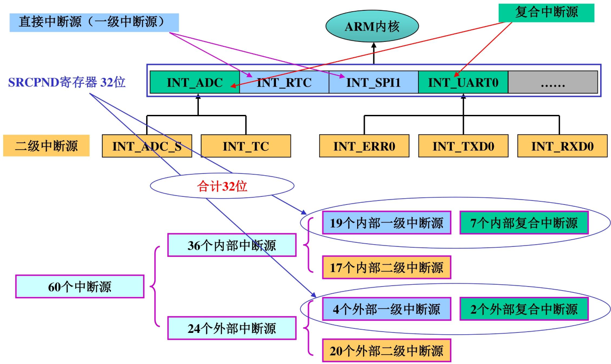
中断过程
中断系统的核心是 “中断源触发→寄存器管控→程序响应” 的闭环流程，寄存器是配置核心，程序应用需遵循 “初始化→使能→处理→清除” 的固定逻辑
- 中断触发：内部外设（如 UART、定时器）或外部设备（如键盘、传感器）产生中断请求，对应中断源置位 SRCPND（子中断源置位 SUBSRCPND）。
- 条件判断：CPU 通过 CPSR 寄存器的 I/F 位判断是否允许中断（I=0 允许 IRQ，F=0 允许 FIQ），同时 INTMSK/SUBINTMSK 判断中断是否被屏蔽。
- 优先级仲裁：7 个仲裁器（6 个一级 + 1 个二级）按 PRIORITY 配置的模式（固定 / 循环）排序，选出最高优先级中断，置位 INTPND 并更新 INTOFFSET。
- 程序跳转：CPU 暂停当前任务，根据 INTOFFSET 值跳转到对应中断服务程序（ISR）。
- 中断处理：执行 ISR 中的业务逻辑（如数据读取、状态提示）。
- 中断清除：手动清除 SUBSRCPND（子中断）、SRCPND、INTPND 的对应位，避免重复响应。
- 恢复现场：ISR 执行完毕，CPU 恢复原任务上下文，回到中断前的程序执行点。
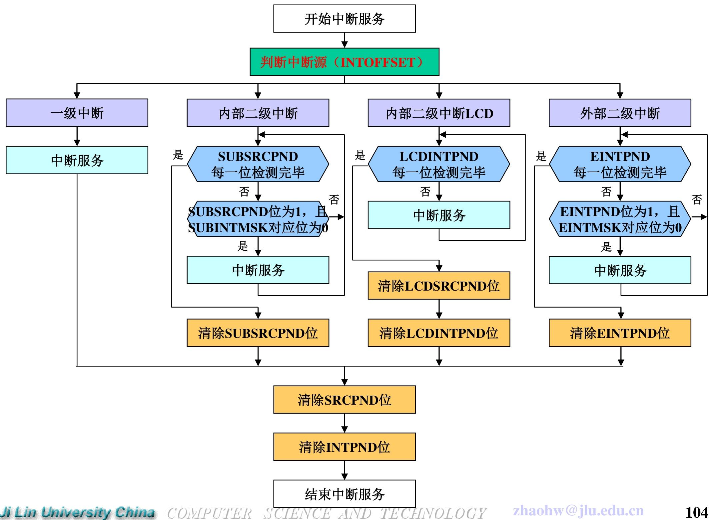
寄存器配置
- 模式与屏蔽配置（中断 “开关”）
| 寄存器 | 核心配置要点 | 关键操作示例（允许 EINT0 中断） |
|---|---|---|
| CPSR | I=0（允许 IRQ）、F=0（允许 FIQ），通过汇编指令修改（如msr cpsr_c, #0x50） |
开启 IRQ 模式：msr cpsr_c, #0x50（I=0，模式为 IRQ） |
| INTMOD | 配置中断为 IRQ（0）或 FIQ（1），仅 1 位可置 1（FIQ 独占） | 设 EINT0 为 IRQ：rINTMOD &= ~BIT_EINT0 |
| INTMSK | 1 = 屏蔽中断，0 = 允许中断，复位值全 1（默认屏蔽所有中断） | 允许 EINT0：rINTMSK &= ~BIT_EINT0 |
| SUBINTMSK | 屏蔽子中断源（如 UART0 的 TXD0/RXD0），1 = 屏蔽，0 = 允许 | 允许 UART0 接收中断：rSUBINTMSK &= ~BIT_RXD0 |
- 优先级配置（中断 “排队规则”）
| 寄存器 | 核心配置要点 | 关键操作示例（默认循环优先级） |
|---|---|---|
| PRIORITY | ARB_MODE（0 = 固定，1 = 循环）、ARB_SEL（指定最低优先级） | 循环优先级：rPRIORITY = 0x0000007F |
- 状态与偏移配置（中断 “定位工具”）
| 寄存器 | 核心配置要点 | 关键操作示例（读取中断源） |
|---|---|---|
| SRCPND | 记录中断源请求状态（1 = 有请求），需写 1 清除 | 清除 EINT0 请求：rSRCPND = BIT_EINT0 |
| INTPND | 记录最高优先级未处理中断（仅 1 位置 1），需写 1 清除 | 清除 EINT0 未决：rINTPND = BIT_EINT0 |
| INTOFFSET | 只读，返回 INTPND 置 1 位的编号，用于定位中断源 | 读取中断编号：unsigned int irq_num = rINTOFFSET |
| SUBSRCPND | 记录子中断源请求状态，需写 1 清除 | 清除 UART0 接收请求：rSUBSRCPND = BIT_RXD0 |
- 外部中断专属配置（外部中断源必备）
| 寄存器 | 核心配置要点 | 关键操作示例（EINT0 下降沿触发） | |
|---|---|---|---|
| EXTINT0~2 | 配置 EINT0~23 的触发方式（000 = 低电平，01×= 下降沿等） | `rEXTINT0 &= 0xFFFFF9F9; rEXTINT0 | = 0x00000202` |
| EINTFLT0~3 | 控制外部中断滤波（滤波时钟 + 宽度），避免信号抖动 | 配置 EINT0 滤波：rEINTFLT0 = 0x0000000F |
|
| EINTMSK | 屏蔽 EINT4~23（1 = 屏蔽），EINT0~3 通过 INTMSK 控制 | 允许 EINT4：rEINTMSK &= ~(1<<4) |
|
| EINTPND | 记录 EINT4~23 的未决状态，需写 1 清除 | 清除 EINT4：rEINTPND = (1<<4) |
程序应用
前期准备：硬件与宏定义
硬件连接：EINT0 接 GPF0、EINT2 接 GPF2，按键 K1/K2 按下触发中断。
- 宏定义（寄存器地址与位掩码）：
#define rGPFCON (*(volatile unsigned *)0x56000050) // GPF控制寄存器
#define rGPFUP (*(volatile unsigned *)0x56000058) // GPF上拉寄存器
#define rEXTINT0 (*(volatile unsigned *)0x56000088) // 外部中断控制寄存器0
#define rSRCPND (*(volatile unsigned *)0x4A000000) // 中断源未决寄存器
#define rINTPND (*(volatile unsigned *)0x4A000010) // 中断未决寄存器
#define rINTMSK (*(volatile unsigned *)0x4A000008) // 中断屏蔽寄存器
#define rINTOFFSET (*(volatile unsigned *)0x4A000014) // 中断偏移寄存器
#define BIT_EINT0 (1<<0) // EINT0位掩码
#define BIT_EINT2 (1<<2) // EINT2位掩码
- 中断初始化函数（核心步骤）
初始化需完成 “GPIO 配置→中断触发方式→中断向量绑定”，避免影响其他引脚功能：
// 中断服务函数声明
static void __irq Eint0_ISR(void);
static void __irq Eint2_ISR(void);
void Eint_Init(void) {
// 步骤1：配置GPF0/EINT0、GPF2/EINT2为中断模式
rGPFCON &= 0xFFCC; // 清除原有配置（不影响其他引脚）
rGPFCON |= 0x0022; // GPF0=10（EINT0）、GPF2=10（EINT2）
// 步骤2：禁用GPF0/GPF2上拉电阻（外部中断避免电平漂移）
rGPFUP |= (1<<0) | (1<<2);
// 步骤3：配置EINT0/EINT2为下降沿触发
rEXTINT0 &= 0xFFFF_F9F9; // 清除触发方式配置
rEXTINT0 |= 0x0000_0202; // EINT0/EINT2=01×（下降沿）
// 步骤4：绑定中断向量（中断发生时跳转至对应ISR）
pISR_EINT0 = (unsigned)Eint0_ISR;
pISR_EINT2 = (unsigned)Eint2_ISR;
}
- 中断使能函数（开启中断响应）
使能前需清除残留未决位，避免误触发：
void Enable_Eint(void) {
rPRIORITY = 0x0000_007F; // 使用默认的循环优先级
rINTMOD = 0x0000_0000; // 所有中断均为默认的IRQ中断
// 清除残留未决位
rSRCPND |= BIT_EINT0 | BIT_EINT2;
rINTPND |= BIT_EINT0 | BIT_EINT2;
// 允许EINT0/EINT2中断（清0INTMSK对应位）
rINTMSK &= ~(BIT_EINT0 | BIT_EINT2);
// 开启IRQ模式（CPSR寄存器I=0）
__asm__("msr cpsr_c, #0x50"); // 0x50对应IRQ模式，I=0
}
- 中断服务函数（ISR：中断发生后的处理逻辑）
需遵循 “防抖→处理→清除” 逻辑，__irq关键字标记为中断函数：
// EINT0中断处理函数（K1按下）
static void_irq Eint0_ISR(void) {
Delay(10); // 软件防抖（避免按键抖动误触发）
Uart_Printf("EINT0 is occurred.\n"); // 业务逻辑：输出提示
// 清除中断未决位（必须步骤，否则重复响应）
rSRCPND = BIT_EINT0;
rINTPND = BIT_EINT0;
}
// EINT2中断处理函数（K2按下）
static void_irq Eint2_ISR(void) {
Delay(10);
Uart_Printf("EINT2 is occurred.\n");
rSRCPND = BIT_EINT2;
rINTPND = BIT_EINT2;
}
- 主程序（初始化 + 等待中断）
主程序通过死循环等待中断，中断触发时自动跳转至 ISR：
int Main(void) {
Uart_Init(115200); // 初始化串口（用于输出提示）
Eint_Init(); // 中断初始化
Enable_Eint(); // 开启中断
while(1) { // 死循环等待中断
Uart_Printf("Main program running...\n");
Delay(50);
}
return 0;
}
DMA
DMA（直接存储器访问）是 S3C2440 芯片中实现高速数据传输的关键模块，核心优势是无需 CPU 干预，直接在存储器与外设、存储器与存储器之间传输数据，大幅提升大批量数据传输效率。
- 通道数量：4 个独立 DMA 通道（Ch-0~Ch-3），通道间相互独立，可同时处理不同传输任务。
- 核心作用：解决 CPU 在大批量数据传输（如 UART 收发、LCD 显示、音频数据传输）中的占用问题，释放 CPU 处理其他任务。
- 启动方式：支持硬件请求（外设触发）、软件请求（程序设置）两种启动模式。
DMA 请求方式与请求源
请求方式（2 种）
- 硬件请求（H/W 模式）：由选定的外设或外部设备触发 DMA 操作，是最常用的启动方式。
- 软件请求（S/W 模式）：通过编程设置寄存器触发 DMA，无需外设信号。
请求源（每通道 7 个，通道间不同）
每个通道可从 7 个专属请求源中选择 1 个，核心对应关系如下：
| 通道 | 核心请求源（典型场景） |
|---|---|
| Ch-0 | UART0（串口 0 数据传输）、Timer（定时器触发）、USB device EP1（USB 设备端点 1） |
| Ch-1 | UART1（串口 1 数据传输）、SPI0（SPI0 通信）、USB device EP2（USB 设备端点 2） |
| Ch-2 | IIS 音频（I2SSDO/SDI）、Timer、MICIN（麦克风输入） |
| Ch-3 | UART2（串口 2 数据传输）、SPI1（SPI1 通信）、PCMOUT（音频输出） |
- 注：nXDREQ0/1 为外部设备请求源，可连接自定义外设。
DMA传输方向
在“源←→目的”之间实现“高性能总线（AHB）←→外设总线（APB）”的传送
4 种组合（AHB↔AHB、AHB→APB、APB→AHB、APB↔APB），覆盖高性能总线与外设总线间所有数据流向。
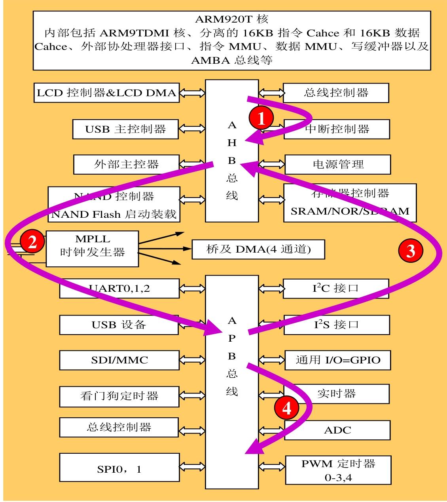
DMA 工作机制（三态 FSM + 核心模式）
DMA 的工作流程遵循固定三态循环，确保传输有序进行：
- 状态 1（等待请求）：初始状态，DMA ACK 和中断请求信号均为 0，等待硬件 / 软件请求触发。
- 状态 2（计数器加载）：收到请求后，DMA ACK 置 1，从 DCON 寄存器加载 20 位传输计数值到 CURR_TC 计数器。
- 状态 3（数据传输）：从源地址读取数据并写入目的地址，每次传输后 CURR_TC 减 1，计数器为 0 时传输结束。
DMA计数器：20位,减1型计数器,每次当前传输结束后计数器的值减1｡ 计数器值减到0时, 表示DMA操作结束｡
DMA工作模式
（1）传输模式（2 种）
- 请求模式（查询模式）：单个数据单元传输结束后，若请求信号（XnXDREQ）仍有效，立即启动下一次传输，适合连续批量传输。
- 握手模式：单个数据单元传输结束后，终止本次操作，需重新请求才能启动下一次传输，适合离散数据传输。
（2）服务模式（2 种）
- 单服务模式：一次请求仅完成 1 个数据单元传输。
- 全服务模式：一次请求完成一批数据单元传输，效率更高。
（3）基本传输模式（2 种）
- 单次传输：一次读操作 + 一次写操作，完成 1 个数据单元传输。
- 突发传输：四次连续读 + 四次连续写，完成 4 个数据单元批量传输，提升传输速率。
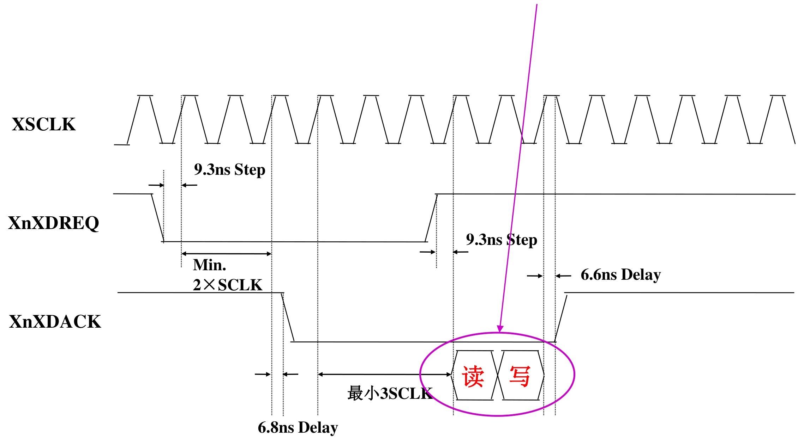
S3C2440芯片的DMA寄存器
- 传输控制寄存器（6 个，可读可写）
（1）源地址相关寄存器
- DISRCn（初始源地址寄存器）：存放传输的源数据起始地址，地址范围 0x4B000000（Ch-0）~0x4B0000C0（Ch-3），复位值 0x00000000。相差0x40
- DISRCCn（源控制寄存器）：配置源地址所在总线（LOC 位：0=AHB，1=APB）和地址增量方式（INC 位：0 = 增加，1 = 固定）。
（2）目的地址相关寄存器
- DIDSTn（初始目的地址寄存器）：存放传输的目的数据起始地址，地址范围 0x4B000008（Ch-0）~0x4B0000C8（Ch-3），复位值 0x00000000。
- DIDSTCn（目的控制寄存器）：配置目的地址所在总线（LOC 位）、地址增量方式（INC 位），额外支持中断触发时机选择（CHK_INT 位）。
（3）核心控制寄存器
- DCONn（DMA 控制寄存器）：DMA 配置核心，关键配置包括：
- 传输模式（DMD_HS 位：0 = 请求模式，1 = 握手模式）；
- 传输大小（TSZ 位：0 = 单次传输，1 = 突发传输）；
- 服务模式（SERVMODE 位：0 = 单服务，1 = 全服务）；
- 请求源选择（HWSRCSEL 位：3 位选择 7 个请求源之一）；
- 传输计数值（TC 位：20 位，实际传输字节数 = 数据宽度 × 传输大小 × 计数值）。
DMASKTRIGn（屏蔽触发寄存器）：控制通道开关（ON_OFF 位：1 = 开启）、软件触发（SW_TRIG 位：1 = 触发）、紧急停止（STOP 位：1 = 传输完成后停止）。
状态寄存器（3 个，仅可读）
DSTATn（DMA 状态寄存器）：查看通道状态（STAT 位：00 = 就绪，01 = 忙）和当前计数值（CURR_TC 位）。
- DCSRCn（当前源地址寄存器）：实时显示当前源地址值，便于调试传输进度。
- DCDSTn（当前目的地址寄存器）：实时显示当前目的地址值，监控传输位置。
DMA 典型工作流程（以 UART1 数据接收为例）
- 配置寄存器：
- 写 DISRC1：设置 UART1 接收数据缓冲区起始地址（源地址）。
- 写 DISRCC1：LOC=1（源在 APB 总线）、INC=0（地址增加）。
- 写 DIDST1：设置存储器中数据存储起始地址（目的地址）。
- 写 DIDSTC1：LOC=0（目的在 AHB 总线）、INC=0（地址增加）。
- 写 DCON1：HWSRCSEL=001（选择 UART1 请求源）、DSZ=00（字节传输）、TSZ=0（单次传输）、SERVMODE=1（全服务模式）。
- 启动 DMA：设置 DMASKTRIG1 的 ON_OFF=1，开启通道。
- 数据传输：UART1 收到数据后触发硬件请求，DMA 自动从 UART1 缓冲区读取数据，写入存储器指定地址。
- 传输结束：计数值（CURR_TC）减至 0，DMA 触发中断（若 INT 位使能），通知 CPU 处理。
定时部件
S3C2440 的定时部件包含看门狗定时器、RTC 实时时钟、Timer 定时器三类核心模块
看门狗定时器（Watchdog Timer）
看门狗定时器（WDT）是 S3C2440 的核心容错 / 定时模块，本质是16 位减 1 计数器，核心价值在于 “程序异常时自动复位系统”，也可当作普通定时器用。
- 「定时中断」：计数到 0 时触发中断，可当作普通定时器使用；
- 「系统复位」：计数到 0 时生成内部复位信号，重启芯片（最核心用途：系统出现故障时产生复位信号）。
硬件结构与时钟计算
PCLK（外设时钟）→ 8位预分频器 → 除数因子（16/32/64/128）→ 计数时钟 → WTCNT（减1计数）→ 触发中断/复位
- PCLK：APB 总线时钟（如 50MHz），为看门狗提供基础时钟；
- 8 位预分频器：0~255 可调，先对 PCLK 做第一步分频；
- 除数因子：4 档可选（16/32/64/128），对预分频后的时钟做第二步分频；
- WTCNT：16 位减 1 计数器，每来一个计数时钟就减 1，减到 0 触发中断 / 复位；
- WTDAT：保存计数初值，WTCNT 减到 0 时自动把初值加载到 WTCNT（实现循环计数）。
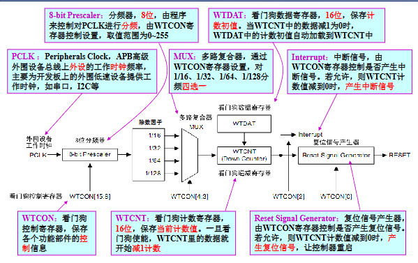
关键计算公式（必背）
（1）看门狗计数时钟频率
F_watchdog = PCLK ÷ (预分频值 + 1) ÷ 除数因子
示例：PCLK=50MHz，预分频值 = 249，除数因子 = 16
F_watchdog = 50MHz ÷ (249+1) ÷ 16 = 50M ÷ 250 ÷ 16 = 12.5kHz
（2）计数时钟周期
T_watchdog = 1 ÷ F_watchdog
示例：F_watchdog=12.5kHz → T_watchdog=1/12500=80μs
（3）计数初值（定时时间换算）
计数初值 = 定时时间 ÷ T_watchdog - 1
= 定时时间 ×（PCLK /（预分频器值+1）/ 除数因子 ）- 1
示例：要定时 1 秒（1000ms），T_watchdog=80μs
计数初值 = 1000000μs ÷ 80μs - 1 = 12500 - 1 = 12499
（注：减 1 是因为计数器从 “初值” 减到 “0” 才算完成一次计数，共经历「初值 + 1」个时钟周期）
看门狗定时器的控制寄存器
| 寄存器 | 地址 | 位宽 | 核心作用 | 复位值 | 读写属性 |
|---|---|---|---|---|---|
| WTCON（控制） | 0x53000000 | 16 位 | 配置分频、使能、中断 / 复位规则 | 0x8021 | 可读可写 |
| WTDAT（数据） | 0x53000004 | 16 位 | 存储计数初值（自动重载） | 0x8000 | 可读可写 |
| WTCNT（计数） | 0x53000008 | 16 位 | 执行减 1 计数（当前值） | 0x8000 | 可读可写 |
关键前提：看门狗的计数时钟 = PCLK / (预分频值 + 1) / 除数因子（PCLK 是外设总线时钟，如 50MHz）。
看门狗控制寄存器（WTCON）
| 位段 | 名称 | 描述 | 初始值 | 配置规则 & 示例 | | ------ | -------------------- | ------------------------------------------------- | ------------------ | ------------------------------------------------------------ | | [15:8] | Prescaler Value | 预分频器值，范围 0~255（2⁸-1） | 0x80（十进制 128） | 例：设为 249 → 预分频后时钟 = PCLK/(249+1)；初始值 0x80 是默认预分频值，可修改 | | [7:6] | Reserved | 保留位，必须设为 0 | 00 | 配置时需用
& ~(3<<6)清 0，避免功能异常 | | [5] | Watchdog Timer | 看门狗使能位：0 = 禁用；1 = 启用 | 1 | 复位默认启用，不用时需手动设 0 | | [4:3] | Clock Select | 除数因子（最终分频）：00=16；01=32；10=64；11=128 | 00 | 例：设为 11 → 除数因子 = 128；初始值 00 对应除数 16 | | [2] | Interrupt Generation | 中断使能位：0 = 禁用中断；1 = 启用中断 | 0 | 需定时中断则设 1，仅复位则保持 0 | | [1] | Reserved | 保留位，必须设为 0 | 0 | 配置时用& ~(1<<1)清 0 | | [0] | Reset Enable/Disable | 复位使能位：0 = 禁用复位；1 = 计数到 0 触发复位 | 1 | 仅定时中断需设 0，系统容错需保持 1 |复位值 0x8021 的含义（二进制：1000 0000 0010 0001）：
- [15:8]=0x80（128）→ 预分频值默认 128；
- [5]=1 → 默认启用看门狗；
- [4:3]=00 → 默认除数因子 16；
- [2]=0 → 默认禁用中断；
- [0]=1 → 默认启用复位功能；
看门狗数据寄存器（WTDAT）
WTDAT 是 “计数初值的仓库”，核心作用是保存看门狗的计数目标值
| 位段 | 名称 | 描述 | 初始值 | 核心规则 & 示例 | | ------ | ------------------ | --------------------------- | ---------------------- | -------------------------------------- | | [15:0] | Count Reload Value | 16 位计数初值，范围 0~65535 | 0x8000（十进制 32768） | 初始值无实际意义，需按定时需求重新计算 |
自动重载：当 WTCNT 减到 0 时，WTDAT 里的初值会自动加载到 WTCNT，实现循环计数（无需 CPU 干预）
看门狗计数寄存器（WTCNT）
WTCNT 是 “实际干活的计数器”，核心是 16 位减 1 计数器
| 位段 | 名称 | 描述 | 初始值 | 核心规则 & 注意事项 | | ------ | ----------- | ------------------------------------ | ---------------------- | ------------------------------ | | [15:0] | Count Value | 计数器当前值，每来一个计数时钟就减 1 | 0x8000（十进制 32768） | 初始值无意义，首次必须手动赋值 |
看门狗启用（WTCON [5]=1）后，WTCNT 开始对 “计数时钟” 减 1，每来 1 个时钟脉冲，值减 1；
WTDAT 的初值不会自动加载到 WTCNT（仅 WTCNT 减到 0 后才会重载），因此首次启用看门狗时，必须手动给 WTCNT 写初值
看门狗定时器初始化
看门狗最核心的两种用法：复位初始化（系统容错） 和定时初始化（中断定时）
看门狗定时器 - 复位初始化（系统容错）
void watchdog_test(void) { // 步骤1：配置预分频值+除数因子（基础时钟分频） rWTCON=((prescaler_value<<8)|(clock_select<<3)); // 步骤2：设置计数初值（WTDAT存储重载值，WTCNT手动赋初值） rWTDAT=15000; // 设置计数初值（WTCNT归0时自动重载） rWTCNT=15000; // 设置计数值（首次计数必须手动赋值，否则从复位值0x8000开始） // 步骤3：清空保留位（[1:0]中的[1]是保留位，必须设0） rWTCON &= ~(3<<1); // 3<<1 = 二进制11<<1 = 110，取反后是...11111001 // 作用：把WTCON的bit1、bit2清0（bit1是保留位，bit2是中断位） // 步骤4：启用看门狗+启用复位功能 rWTCON|=((1<<5)|(1<<0)); // 1<<5=bit5置1（启用看门狗）；1<<0=bit0置1（启用复位） // 步骤5：死循环（模拟程序跑飞，无喂狗操作） while(1); }看门狗定时器 - 定时初始化（中断定时）
void watchdog_test(void) { // 步骤1：配置预分频值+除数因子（和复位版一致） rWTCON=((prescaler_value<<8)|(clock_select<<3)); // 步骤2：设置计数初值（和复位版一致） rWTDAT=15000; // 设置计数初值 rWTCNT=15000; // 设置计数值（首次必须手动赋值） // 步骤3：启用看门狗+启用中断功能（核心差异点） rWTCON|=(1<<5)|(1<<2); // 1<<5=bit5置1（启用看门狗）；1<<2=bit2置1（启用中断） // 步骤4：死循环（等待中断触发） while(1) ; }
RTC 部件（实时时钟）
RTC（Real Time Clock，实时时钟）是 S3C2440 芯片中独立的时间管理模块，核心优势是掉电后仍能正常工作（依赖后备电池），可精准记录年 / 月 / 日 / 时 / 分 / 秒 / 星期，支持定时报警和节拍中断
- 时间维度：完整覆盖年、月、日、时、分、秒、星期，解决 2000 年闰年问题。
- 供电与时钟：独立电源引脚（RTCVDD），外接 32.768KHz 高精度晶振，分频后生成 1Hz 秒时钟和 128Hz 节拍时钟。
- 核心功能
- 时间记录：以压缩 BCD 码格式存储时间数据；
- 报警功能：支持年 / 月 / 日 / 时 / 分 / 秒维度报警，可触发中断或唤醒掉电模式；
- 节拍中断：支持毫秒级周期性中断（由 128Hz 时钟衍生）；
- 操作指令：支持 LDRB/STRB 指令读写（适配字节级数据）。
- 数据格式：所有时间 / 报警数据均为压缩 BCD 码（如数字 “12” 存储为 0x12，而非十进制 12）。
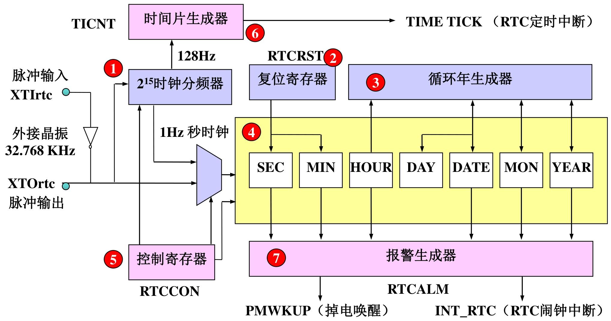
RTC定时初始化
置 RTC 工作模式 + 设置初始时间（年 / 月 / 日 / 时 / 分 / 秒 / 星期） + 禁用 RTC 以降低功耗
// 1. 寄存器地址宏定义（S3C2440 RTC相关寄存器物理地址）
#define rRTCCON (*(volatile unsigned int *)0x57000040) // RTC总控制寄存器
#define rBCDYEAR (*(volatile unsigned int *)0x57000088) // BCD码年份寄存器（0x00~0x99，对应00~99年）
#define rBCDMON (*(volatile unsigned int *)0x57000084) // BCD码月份寄存器（0x01~0x12）
#define rBCDDATE (*(volatile unsigned int *)0x5700007C) // BCD码日期寄存器（0x01~0x31）
#define rBCDDAY (*(volatile unsigned int *)0x57000080) // BCD码星期寄存器（0x01~0x07，1=周日~7=周六）
#define rBCDHOUR (*(volatile unsigned int *)0x57000078) // BCD码小时寄存器（0x00~0x23）
#define rBCDMIN (*(volatile unsigned int *)0x57000074) // BCD码分钟寄存器（0x00~0x59）
#define rBCDSEC (*(volatile unsigned int *)0x57000070) // BCD码秒寄存器（0x00~0x59）
// 2. 初始时间配置宏定义（需根据需求修改，必须为压缩BCD码格式）
// 示例：2024年10月26日 周五 15:30:00 → BCD码对应 0x24=24, 0x10=10, 0x26=26, 0x05=周五, 0x15=15, 0x30=30, 0x00=00
#define TESTYEAR 0x24 // 年份（BCD码，0x00~0x99）
#define TESTMONTH 0x10 // 月份（BCD码，0x01~0x12）
#define TESTDATE 0x26 // 日期（BCD码，0x01~0x31）
#define TESTDAY 0x05 // 星期（BCD码，0x01~0x07）
#define TESTHOUR 0x15 // 小时（BCD码，0x00~0x23）
#define TESTMIN 0x30 // 分钟（BCD码，0x00~0x59）
#define TESTSEC 0x00 // 秒（BCD码，0x00~0x59）
/**
* @brief RTC初始化函数：配置RTC工作模式并设置初始时间
* @note 1. 时间数据采用压缩BCD码格式（如十进制24 → 0x24，十进制10 → 0x10）
* 2. 操作流程：使能RTC→写入时间→禁用RTC（降低功耗+防止误操作）
* 3. 掉电后需外接备用电池，RTC才能保持时间运行
*/
void Rtc_Init(void)
{
// 步骤1：配置RTCCON寄存器，使能RTC并设置工作模式
// 位操作逻辑：rRTCCON & ~0xf → 清除低4位（[3:0]），rRTCCON | 0x1 → 置位bit0（RTCEN=1）
// 最终配置：CLKRST=0（无复位）、CNTSEL=0（合并BCD计数器）、CLKSEL=0（32.768KHz时钟）、RTCEN=1（使能RTC读写）
rRTCCON = rRTCCON & ~(0xf) | 0x1;
// 步骤2：写入初始年份（BCD码），先清后设避免原有值干扰
// rBCDYEAR & ~0xff → 清除低8位（年份寄存器有效位为8位），| TESTYEAR → 写入BCD码年份
rBCDYEAR = rBCDYEAR & ~(0xff) | TESTYEAR;
// 步骤3：写入初始月份（BCD码），低5位有效（月份范围01~12，5位足够表示）
rBCDMON = rBCDMON & ~(0x1f) | TESTMONTH;
// 步骤4：写入初始日期（BCD码），低6位有效（日期范围01~31，6位足够表示）
rBCDDATE = rBCDDATE & ~(0x3f) | TESTDATE;
// 步骤5：写入初始星期（BCD码），低3位有效（星期范围01~07，3位足够表示）
rBCDDAY = rBCDDAY & ~(0x7) | TESTDAY;
// 步骤6：写入初始小时（BCD码），低6位有效（小时范围00~23，6位足够表示）
rBCDHOUR = rBCDHOUR & ~(0x3f) | TESTHOUR;
// 步骤7：写入初始分钟（BCD码），低7位有效（分钟范围00~59，7位足够表示）
rBCDMIN = rBCDMIN & ~(0x7f) | TESTMIN;
// 步骤8：写入初始秒（BCD码），低7位有效（秒范围00~59，7位足够表示）
rBCDSEC = rBCDSEC & ~(0x7f) | TESTSEC;
// 步骤9：禁用RTC，锁定时间寄存器（降低功耗，防止后续误操作）
// 配置：RTCCON=0x0 → RTCEN=0（禁用读写），其他位保持默认（无复位、合并计数器、正常时钟）
rRTCCON = 0x0;
}
Timer 定时器
Timer 定时器是 S3C2440 核心可编程模块，本质是 16 位减 1 计数器，核心能力覆盖精准定时、PWM 脉宽调制、DMA 请求触发，支持多模式配置，适配电机控制、周期性中断等场景
- 硬件规格：5 个独立 16 位定时器（Timer0~Timer4），2 个 8 位可编程预分频器 + 2 个 4 路分频器，支持 5 选 1 时钟源切换。
- 核心功能
- 定时中断：达到设定时间触发中断，释放 CPU；
- PWM 输出：Timer0~Timer3 支持 PWM 波形，占空比可调；
- DMA 请求：可触发 DMA 传输，无需 CPU 干预数据搬运；
- 多工作模式：单脉冲（一次性信号）、自动加载（连续脉冲）、死区生成（防设备同时启动）。
- 关键机制：双缓冲结构（TCNTBn/TCMPBn），运行中可更新配置，下周期生效。
（1）计数时钟频率
计数时钟频率 = PCLK ÷ (预分频值 + 1) ÷ 分频值
示例：PCLK=50MHz，预分频值 = 249，分频值 = 8
计数时钟频率 = 50MHz ÷ (249+1) ÷8 = 25KHz
（2）计数时钟周期
计数时钟周期 = 1 ÷ 计数时钟频率
示例：25KHz 对应时钟周期 = 40μs
（3）定时时间计算
定时时间 = (计数初值 + 1) × 计数时钟周期
→ 计数初值 = 定时时间 ÷ 计数时钟周期 - 1
示例：定时 0.2 秒（200ms），时钟周期 40μs
计数初值 = 200000μs ÷40μs -1 = 4999
（4）PWM 占空比计算
占空比 = (TCNTBn - TCMPBn) ÷ TCNTBn × 100%
示例：TCNTBn=100，TCMPBn=20 → 占空比 = 80%（高电平占 80%）
定时器初始化通用流程
- 选择定时器通道（0~4）；
- 配置 TCFG0：设置预分频值；
- 配置 TCFG1：设置分频因子（5 选 1）；
- 配置 TCNTBn：写入计数初值（定时周期 / PWM 周期）；
- （PWM 模式）配置 TCMPBn：写入比较初值（占空比）；
- 配置 TCON：置位 “手动更新”+“自动加载”；
- 清除 TCON “手动更新”，启动定时器；
- （中断模式）配置中断控制器，绑定中断处理函数。
代码实例（2 类核心用法）
用法 1：定时中断（Timer0 产生 0.2 秒中断)
// 寄存器地址宏定义
#define rTCFG0 (*(volatile unsigned int *)0x51000000)
#define rTCFG1 (*(volatile unsigned int *)0x51000004)
#define rTCON (*(volatile unsigned int *)0x51000008)
#define rTCNTB0 (*(volatile unsigned int *)0x5100000C)
#define rTCMPB0 (*(volatile unsigned int *)0x51000010)
void Timer0_Init(void)
{
// 步骤1：配置预分频（Timer0预分频=255）
rTCFG0 &= ~0xFF; // 清Timer0预分频位
rTCFG0 |= 0xFF; // 预分频值=255
// 步骤2：配置分频因子（16分频）
rTCFG1 &= ~0xF; // 清Timer0分频位
rTCFG1 |= 0x3; // 0011=16分频
// 步骤3：计算并设置计数初值（PCLK=50MHz，定时0.2秒）
// 计数时钟频率=50MHz/(255+1)/16≈12.2KHz，时钟周期≈81.92us
rTCNTB0 = 2440; // (2440+1)*81.92us≈0.2秒
// 步骤4：配置TCON（手动更新+自动加载）
rTCON |= (1<<1) | (1<<3); // 置位手动更新、自动加载
rTCON &= ~(1<<1); // 清除手动更新（加载初值）
rTCON |= 1<<0; // 启动Timer0
// 步骤5：配置中断（绑定中断向量）
pISR_TIMER0 = (unsigned)Timer0_ISR;
rINTMSK &= ~BIT_TIMER0; // 解除Timer0中断屏蔽
}
// 中断处理函数
void __irq Timer0_ISR(void)
{
// 清除中断未决位
rSRCPND |= BIT_TIMER0;
rINTPND |= BIT_TIMER0;
// 业务逻辑：如串口输出定时提示
Uart_Printf("Timer0 interrupt trigger!\n");
}
用法 2：PWM 输出（Timer0 产生 50Hz，占空比 50% 波形）
void Timer0_PWM_Init(void)
{
// 步骤1：引脚复用（GPB0=TOUT0）
rGPBCON &= ~0x3;
rGPBCON |= 0x2; // GPB0配置为TOUT0输出
// 步骤2：预分频+分频配置（同定时中断，计数时钟=12.2KHz）
rTCFG0 |= 0xFF;
rTCFG1 |= 0x3;
// 步骤3：设置PWM周期（50Hz=20ms，计数初值=244）
rTCNTB0 = 244; // (244+1)*81.92us≈20ms
// 步骤4：设置占空比50%（比较初值=122）
rTCMPB0 = 122; // 高电平时间=(244-122)*81.92us≈10ms
// 步骤5：启动PWM（自动加载模式）
rTCON |= (1<<1) | (1<<3);
rTCON &= ~(1<<1);
rTCON |= 1<<0;
}
关键注意事项（避坑指南）
- 手动更新必须配置：启动定时器前，需先置位 “手动更新”，加载 TCNTBn/TCMPBn 初值，再清除该位；
- PWM 通道限制：Timer4 无 PWM 功能，无 TCMPB4 寄存器；
- 引脚复用：TOUT0~TOUT3 与 GPB0~GPB3 复用，需先配置引脚功能；
- 死区仅 Timer0 支持：其他通道无死区生成器；
- 双缓冲生效时机：运行中修改 TCNTBn/TCMPBn，需等待当前周期结束，下周期才会应用新配置。
UART
UART（通用异步收发器）是嵌入式系统中最核心的串行通信模块，S3C2440 的 UART 模块功能丰富、配置灵活
| 术语 | 解释 |
|---|---|
| 串行通信 | 数据一位一位传输（对比并行通信），优点：传输线少、成本低、适合远距离；缺点：速度慢 |
| 通信方向 | 单工（仅收 / 仅发）、半双工（收 / 发分时）、全双工（收 / 发同时，UART 支持） |
| 通信同步方式 | 异步通信（UART）：收发无共用时钟，靠帧格式同步；同步通信：收发共用时钟（如 SPI） |
| 数据传输规则 | UART 以字符为单位，先低位后高位 逐位传输，靠 “起始位 + 停止位” 界定字符边界 |
- UART 帧格式（通用标准）
一个完整的 UART 传输帧包含 5 部分（可编程配置）
空闲位（高电平）→ 起始位（1位，低电平）→ 数据位（5~8位）→ 奇偶校验位（可选）→ 停止位（1~2位，高电平）
例：文档中 “8N1” 格式 = 1 起始位 + 8 数据位 + 无校验 + 1 停止位（最常用）。
S3C2440 内置 3 个独立 UART 通道（UART0/1/2），核心特性可归纳为 8 类：
- 通道差异化特性
| 通道 | 核心能力 | 特殊限制 |
|---|---|---|
| UART0 | 支持 AFC 自动流控、红外模式 | 复用 GPH0（nCTS0）/GPH1（nRTS0） |
| UART1 | 支持 AFC 自动流控、红外模式 | 复用 GPG10（nCTS1）/GPG9（nRTS1） |
| UART2 | 无 AFC、无 nRTS/nCTS 引脚 | 仅基础收发，复用 GPH7（RXD2）/GPH6（TXD2 |
工作模式（3 种）
查询模式（轮询）：CPU 主动查询状态寄存器，判断收发状态（简单但占用 CPU）；
- 中断模式：收发就绪 / 出错时触发中断，CPU 按需处理（高效，推荐）；
DMA 模式：收发数据直接通过 DMA 搬运，CPU 无需参与（高吞吐场景）。
数据缓冲方式（2 种）
单寄存器模式：收发各 1 个 8 位缓冲寄存器（UTXHn/URXHn），无 FIFO；
FIFO 模式：收发各 64 字节 FIFO，可设置触发阈值（减少中断次数）。
其他关键特性
时钟源：3 选一（PCLK / 外设时钟、FCLK/n/ 内核分频、UEXTCLK / 外部时钟）；
- 波特率：最大 115.2Kbps（UEXTCLK 可更高），内置波特率发生器；
- 测试模式：回送模式（自发自收，用于自检）、红外模式（IR，适配红外通信）；
- 错误检测：支持溢出 / 奇偶校验 / 帧错误 / 终止条件检测，错误状态可触发中断。
S3C2440 UART 核心原理
ART 模块由 4 个核心子模块组成，信号流向：
CPU → 控制单元 → 波特率发生器 → 发送器（并串转换）→ TxD引脚
RxD引脚 → 接收器（串并转换）→ 控制单元 → CPU
波特率计算（核心公式）
时钟源（PCLK/FCLK/n/UEXTCLK）→ 预分频（可选）→ UBRDIVn分频 → 移位时钟（波特率×16）
- 时钟源选择：通过 UCONn 寄存器 [11:10] 位三选一：
- 00/10：PCLK（外设时钟，例中为 50MHz）；
- 01：UEXTCLK（外部输入时钟）；
- 11：FCLK/n（内核时钟分频）；
- UBRDIVn 分频：核心分频环节，16 位除数寄存器（UBRDIVn）实现 “源时钟 ÷ (UBRDIVn + 1)” 的分频。
波特率由 “时钟源” 和 “UBRDIVn 除数” 共同决定，公式：
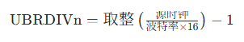
UART 的移位时钟频率必须是波特率的 16 倍
UART0 初始化
UART 初始化的核心是 “硬件引脚→时钟→波特率→帧格式→功能禁用 / 启用→工作模式” 的递进配置
| 通用流程步骤 | 例 5-9 具体操作 | 核心寄存器 | 配置目标 |
|---|---|---|---|
| 1. 初始化引脚 | 配置 GPH2=TXD0、GPH3=RXD0，禁用上拉 | GPHCON、GPHUP | 引脚复用为 UART 功能，而非 GPIO |
| 2. 选择时钟源 | 选择 PCLK（50MHz）作为 UART 时钟 | UCON0[11:10] | 为波特率计算提供时钟基准 |
| 3. 配置波特率 | 计算并设置 UBRDIV0=0x1A（26） | UBRDIV0 | 实现 115200bps 波特率 |
| 4. 配置帧格式 | 8 位数据位、1 位停止位、无校验 | ULCON0 | 匹配 “1 起始 + 8 数据 + 无校验 + 1 停止” 的帧格式 |
| 5. 配置自动流控 | 禁用 AFC 功能 | UMCON0 | 无需 nRTS/nCTS 流控信号 |
| 6. 配置收发 FIFO | 禁用 FIFO 模式 | UFCON0 | 仅使用单寄存器缓冲收发 |
| 7. 配置收发模式 | 配置为查询（轮询）模式 | UCON0[3:0] | CPU 主动查询状态寄存器完成收发 |
// 1. 寄存器地址宏定义（S3C2440 UART0及GPIO相关寄存器）
#define rULCON0 (*(volatile unsigned int *)0x50000000) // UART0线控制寄存器（帧格式）
#define rUCON0 (*(volatile unsigned int *)0x50000004) // UART0控制寄存器（时钟/模式）
#define rUFCON0 (*(volatile unsigned int *)0x50000008) // UART0 FIFO控制寄存器
#define rUMCON0 (*(volatile unsigned int *)0x5000000C) // UART0 MODEM控制寄存器（流控）
#define rUTRSTAT0 (*(volatile unsigned int *)0x50000010) // UART0状态寄存器（收发状态）
#define rUBRDIV0 (*(volatile unsigned int *)0x50000028) // UART0波特率除数寄存器
#define rUTXH0 (*(volatile unsigned int *)0x50000020) // UART0发送缓冲寄存器（写数据）
#define rURXH0 (*(volatile unsigned int *)0x50000024) // UART0接收缓冲寄存器（读数据）
#define rGPHCON (*(volatile unsigned int *)0x56000070) // GPIO GPH端口配置寄存器（引脚复用）
#define rGPHUP (*(volatile unsigned int *)0x56000078) // GPIO GPH端口上拉电阻控制寄存器
// 2. 主函数（初始化+循环收发）
int TSmain( )
{
char buf; // 存储收发数据的缓冲变量（8位，匹配UART字节传输）
/************************** 步骤1：GPIO引脚配置（GPH2=TXD0，GPH3=RXD0）**************************/
// 清除GPH2[5:4]、GPH3[7:6]原有配置，避免干扰
rGPHCON &= 0xFFFF0F;
// 配置GPH2=10（TXD0）、GPH3=10（RXD0），复用为UART0功能
rGPHCON |= 0xA0;
// 清除GPH2、GPH3的上拉配置
rGPHUP &= 0x7F3;
// 禁用GPH2、GPH3上拉电阻（UART通信无需上拉）
rGPHUP |= 0x00C;
/************************** 步骤2：UART0核心初始化 **************************/
// 配置帧格式：1起始位+8数据位+无校验+1停止位（8N1）
rULCON0 &= 0x00; // 清除原有配置
rULCON0 |= 0x03; // 00000011 → 数据位8位、无校验、停止位1位
// 配置时钟源+收发模式：PCLK（50MHz）+ 查询模式
rUCON0 = 0x0805; // 0000100000000101 → 时钟源=PCLK，收发均为查询/中断模式（本例用查询）
// 配置波特率：115200bps，除数因子=26（0x1A）
rUBRDIV0 = 0x1A;
// 禁用FIFO模式（仅用单寄存器缓冲）
rUFCON0 = 0x00;
// 禁用自动流控AFC（无需nRTS/nCTS引脚）
rUMCON0 = 0x00;
/************************** 步骤3：循环查询收发（回声功能）**************************/
while (1)
{
// 查询接收状态：UTRSTAT0[0]=1 → 接收缓冲有数据
if (rUTRSTAT0 & 0x01)
{
buf = rURXH0; // 从接收缓冲寄存器读取数据
}
// 查询发送状态：UTRSTAT0[2]=1 → 发送器空（缓冲+移位寄存器均空，发送完成）
if (rUTRSTAT0 & 0x04)
{
rUTXH0 = buf; // 把接收的数据写入发送缓冲寄存器，实现回声
}
}
return 0;
}
// 3. 汇编入口（指定程序入口，设置堆栈）
AREA |DATA|, CODE, READONLY
ENTRY ; 标记程序入口
ldr r13, =0x1000 ; 设置堆栈指针SP地址为0x1000
b TSmain ; 跳转到主函数TSmain
IMPORT TSmain ; 声明TSmain为外部定义（若分文件编译需保留）
END ; 程序结束
ADC 及触摸屏接口
S3C2440 集成的 ADC（模数转换器）与触摸屏接口是嵌入式系统中模拟信号采集、触控输入的核心模块
ADC 基础原理
将连续的模拟电压信号（如传感器、触摸屏分压）转换为离散的数字信号，供 CPU 处理；核心过程为采样→量化→编码：
- 采样：按 “采样定理（采样频率≥2× 信号最高频率）” 将时间连续的模拟信号转为时间离散的信号；
- 量化：将幅值连续的采样信号转为幅值离散的信号；
- 编码：将量化后的信号转为二进制数字（S3C2440 为 10 位）。
主流转换方法对比
| 转换方法 | 核心原理 | 优势 | 劣势 | 应用场景 |
|---|---|---|---|---|
| 计数式 | 斜坡电压与被测电压比较 | 电路简单、成本低 | 转换速度极慢 | 低速简易场景 |
| 双积分式 | 对输入 / 参考电压两次积分 | 精度高、抗干扰强 | 速度慢（<10Hz） | 仪器仪表、温度测量 |
| 逐次逼近式 | 二分法逼近被测电压 | 速度快、精度适中 | 抗干扰一般 | 微型机（S3C2440 采用） |
ADC 关键指标：
- 分辨率：S3C2440 为 10 位（数字输出范围 0~0x3FF），对应最小可分辨电压 = 3.3V/1024≈3.22mV；
- 转换速率：最大 500KSPS（每秒采样 50 万次），由 PCLK 分频后的 ADC 时钟决定；
- 量程：模拟输入电压 0~3.3V（单极性）；
- 转换时间：公式为
5/(PCLK/(预分频值+1))（10 位转换需 5 个 ADC 时钟周期）。
ADC 工作模式
ADC有五种工作模式，采用不同方式采集信号
| 模式类型 | 适用场景 | 核心配置 / 操作 |
|---|---|---|
| 普通转换模式 | 非触摸屏的单通道模拟采集 | ADCTSC [1:0]=00，选通道后命令启动 ADC |
| 分离 XY 坐标转换模式 | 触摸屏手动分步采集 X/Y | ADCTSC=0x69（X）/0x09（Y），分别转换 |
| 自动（连续）XY 坐标模式 | 触摸屏一键采集 X/Y | ADCTSC [2]=1，连续转换 X/Y 并存入 ADCDAT0/1 |
| 等待中断模式 | 检测触摸屏按下 / 抬起 | ADCTSC [1:0]=11，触发 INT_TC 中断 |
| 备用模式 | 低功耗待机 | ADCCON [2]=1，停止 ADC 转换 |
核心寄存器
通过下面的寄存器配置可以控制ADC
| 寄存器 | 地址 | 核心功能 | 关键位 / 配置 |
|---|---|---|---|
| ADCCON | 0x58000000 | ADC 主控（时钟 / 启动 / 通道） | [14]：预分频使能；[13:6]：预分频值；[0]：命令启动 |
| ADCTSC | 0x58000004 | 触摸屏控制（模式 / 引脚） | [1:0]：工作模式；[2]：自动 XY 转换；[3]：XP 上拉 |
| ADCDLY | 0x58000008 | 转换延时 | [15:0]：延时值（等待中断模式需≥ms 级） |
| ADCDAT0/1 | 0x5800000C/10 | 转换数据存储 | [9:0]：X/Y 坐标（10 位数据） |
| ADCUPDN | 0x58000014 | 触摸中断标志 | [0]：按下中断；[1]：抬起中断 |
触摸屏坐标采集
通过 “等待中断模式检测触摸→自动 XY 模式采集坐标→UART 输出结果” 实现触摸屏触控采集，完整流程如下：
步骤 1：系统时钟配置
- 设置分频比：FCLK:HCLK:PCLK=1:3:6；
- 配置 MPLL：Fin=12MHz→FCLK=202.8MHz→PCLK=33.8MHz（ADC 时钟源）。
步骤 2：UART 初始化
- 配置 UART0 为 115200bps、8N1、禁用 FIFO，用于坐标数据输出。
步骤 3：ADC + 触摸屏初始化
- 配置 ADCDLY：设置延时值（如 50000，对应 13.56ms）；
- 配置 ADCCON：预分频使能 + 预分频值 39（ADC 时钟 = 33.8MHz/40≈845KHz）+ 普通模式；
- 配置 ADCTSC：设为等待中断模式（0xD3），检测触摸按下；
- 中断配置：映射 ADC 中断向量→清除未决位→开启 INT_ADC/INT_TC 中断。
步骤 4：中断服务程序（核心）
- 关中断：避免嵌套干扰；
- 切换模式：ADCTSC 设为自动连续 XY 坐标转换模式；
- 启动 ADC：命令启动（ADCCON [0]=1），查询转换完成标志（ADCCON [15]=1）；
- 读取数据：循环 5 次采集 X/Y 坐标，存入 ADCDAT0/1；
- 输出数据：通过 UART 打印 5 组坐标；
- 恢复模式：重置 ADCTSC 为等待中断模式，清除中断标志并重新开中断。
步骤 5：关闭触摸屏
- 关中断→配置 ADCCON 为备用模式（低功耗）。
[!tip]
- ADC 核心：以逐次逼近式为基础，通过 PCLK 分频控制转换速率，10 位分辨率满足大多数嵌入式模拟采集需求；
- 触摸屏核心：复用 ADC 通道，通过电阻分压原理实现坐标采集，结合中断模式实现触摸事件的高效检测；
- 编程关键
- 时钟配置：预分频值需保证 ADC 时钟≤2.5MHz（最大转换速率）；
- 模式切换：等待中断模式（检测触摸）与自动 XY 模式（采集坐标）的配合；
- 中断管理：正确清除未决位、开关中断，避免漏触发 / 重复触发；